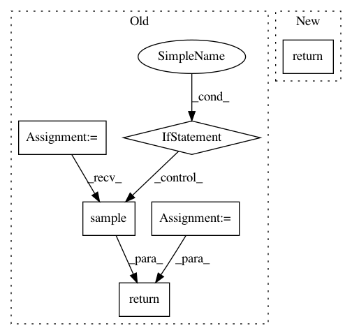

4d4da8d719d38094e9e73adb2ad7ccb60461a0f6,slm_lab/agent/algorithm/dqn.py,DQNBase,sample,#DQNBase#,110
Before Change
return q_targets
def sample(self):
batches = [body.memory.sample(self.batch_size)
for body in self.agent.flat_nonan_body_a]
batch = util.concat_dict(batches)
util.to_torch_batch(batch)
return batch
def train(self):
t = util.s_get(self, "aeb_space.clock").get("total_t")
if (t > self.training_min_timestep and t % self.training_frequency == 0):
After Change
return q_targets
def sample(self):
return super(DQNBase, self).sample()
def train(self):
return super(DQNBase, self).train()
In pattern: SUPERPATTERN
Frequency: 3
Non-data size: 6
Instances
Project Name: kengz/SLM-Lab
Commit Name: 4d4da8d719d38094e9e73adb2ad7ccb60461a0f6
Time: 2018-01-04
Author: lgraesser@users.noreply.github.com
File Name: slm_lab/agent/algorithm/dqn.py
Class Name: DQNBase
Method Name: sample
Project Name: ray-project/ray
Commit Name: 1775e89f262111791fabfd40f80a24f74738fe54
Time: 2020-04-28
Author: sven@anyscale.io
File Name: rllib/models/tf/tf_action_dist.py
Class Name: MultiActionDistribution
Method Name: sample
Project Name: chainer/chainerrl
Commit Name: c565f7c9035308fda5e1850e0b9ffbb823cd36ff
Time: 2019-05-08
Author: muupan@gmail.com
File Name: chainerrl/agents/soft_actor_critic.py
Class Name: SoftActorCritic
Method Name: select_greedy_action